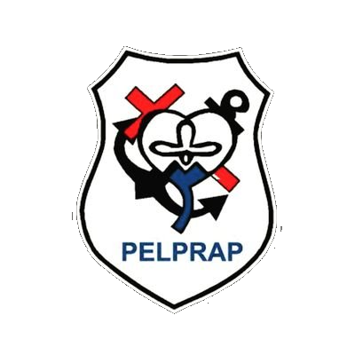
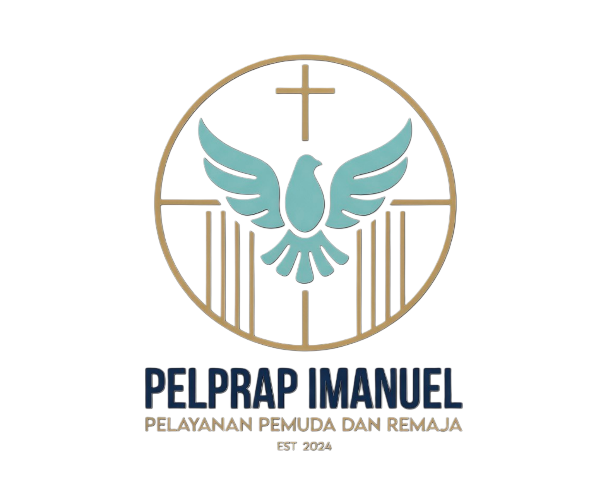
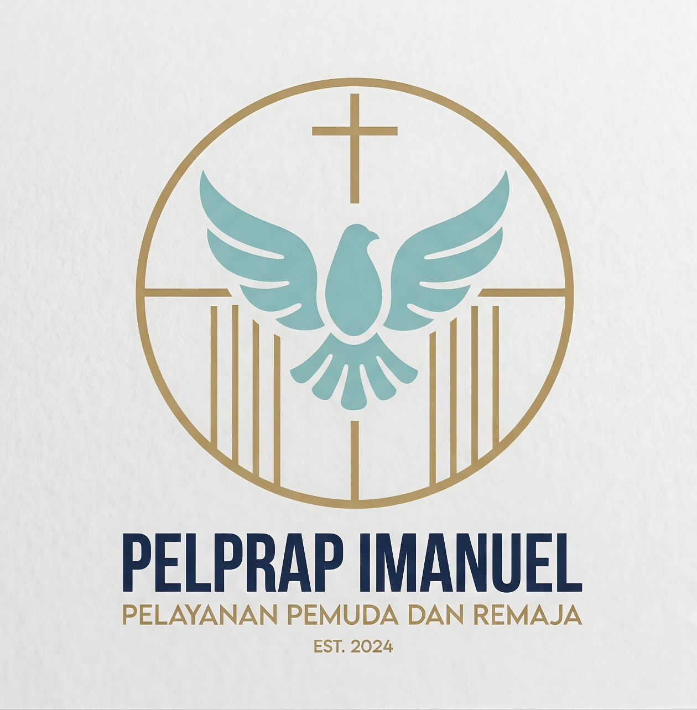

Komisi Pusat
ImanuelFilosofi & Identitas Visual
Mengenal lebih dalam makna di balik setiap garis, bentuk, dan warna lambang resmi PELPRAP IMANUEL.
Motto Pelayanan
BERIMAN
Tertanam dan berakar kuat di dalam kebenaran Firman Tuhan sebagai fondasi utama kehidupan dan pelayanan generasi muda.
BERBUAH
Menghasilkan buah Roh dalam karakter, perkataan, dan perbuatan nyata, serta memenangkan jiwa baru bagi Kristus.
BERDAMPAK
Menjadi garam dan terang yang memancarkan pengaruh positif bagi gereja lokal, keluarga, lingkungan sekolah/kerja, dan masyarakat.
Logo Transparan (PNG)
Ideal untuk latar belakang gelap, video overlay, banner promosi, atau desain poster dengan latar berwarna kompleks.

Logo Solid Berwarna
Varian resmi untuk dokumen surat menyurat, sertifikat, merchandise resmi, dan spanduk berlatar terang.
Makna Simbolik Elemen Logo
Salib Kristus
Sentral identitas dan iman kita. Melambangkan karya penebusan Kristus, kasih yang tanpa syarat, dan otoritas tertinggi Tuhan atas seluruh pelayanan.
Burung Merpati
Representasi Roh Kudus yang memberikan kuasa, penyertaan, dan kedamaian. Sayap membentang melambangkan dinamika masa muda yang siap diutus melayani.
Lingkaran Kesatuan
Lingkaran mencerminkan kesatuan tubuh Kristus dalam persekutuan (fellowship). Pilar vertikal melambangkan iman yang teguh dan terus mengarah ke atas.
Tipografi Tegas
Huruf proporsional dan bersih mencerminkan integritas, keteguhan prinsip, dan sifat resmi organisasi kepemudaan yang modern dan adaptif.
Palet Warna Resmi
Kombinasi warna yang mencerminkan kekudusan, kesegaran jiwa muda, dan stabilitas rohani. Klik warna untuk menyalin kode HEX!
Emas Lembut (Gold)
#D4AF37
Kesucian, Kemuliaan Tuhan, Nilai Luhur
Teal Segar (Fresh Teal)
#5BB2B0
Kedamaian Roh Kudus, Harapan, Jiwa Muda
Biru Navy Tua
#1A365D
Stabilitas, Fondasi Kokoh, Integritas
Unduh Aset Logo Resmi
Gunakan file aset berkualitas tinggi untuk pembuatan spanduk ibadah, seragam pemuda, presentasi, dan publikasi media sosial.
{kind=link}
{kind=link}
*Klik tombol di atas untuk mengunduh langsung ke penyimpanan perangkat Anda.